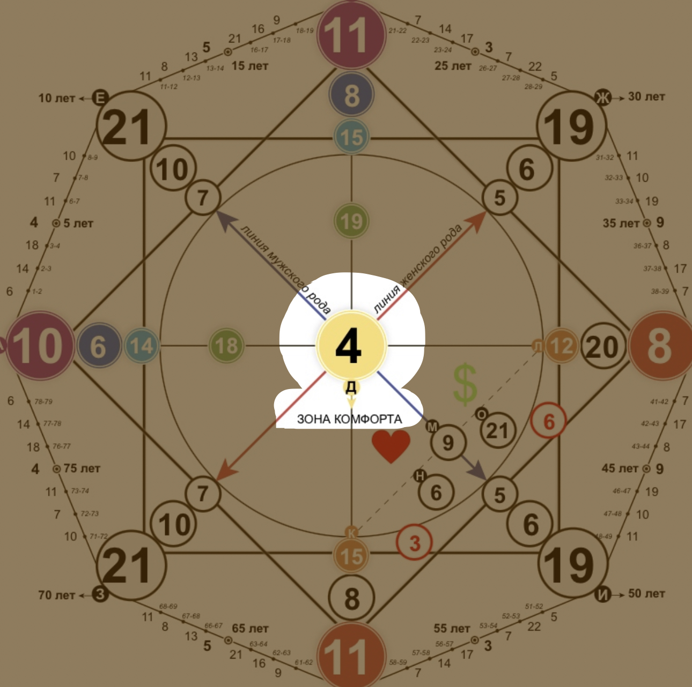

Центр (зона комфорта)
Характер

Центральная энергия. Это характер человека, код личной силы, зона комфорта. От центра расходятся лучи к другим энергиям, а это значит, что если центральная энергия в плюсе, то она максимально раскрывает и подпитывает все остальные, отвечающие за различные сферы жизни. И наоборот – минусовой центр будет тянуть на дно все остальные энергии. Поэтому, в первую очередь, человек должен глубоко знать свою основную энергию и вывести ее в плюс.
4 енергия - Император, хозяин.
Это самый мужской аркан в матрице. Энергия правителя, хозяина, мужской силы, лидерства, власти. Вам свойственна активная жизненная позиция. Это аркан начальников, людей, которым нужно брать власть в свои руки. Владельцы собственного бизнеса.
Вы человек, который умеет брать на себя ответственность. Главное, умейте переключаться в ролях – на работе вы начальник, лидер, но дома ведите себя более мягко, без деспотичности и тирании.
Вы способны построить собственный бизнес, либо занимать высокие руководящие позиции. Проработайте свои обиды на отца или мужчин рода.
Человек 4 энергии очень работоспособный, ответственный, стремиться все упорядочить и подчинить себе. Обладают природной хозяйственностью и упорядочеванием. Высокие организаторские способности. Умение отвечать не только за свои, но и за чужие поступки. Вы склонны контролировать все процессы. Принимая определенное решение, вы идете до конца. Блестящая логика, структурность в голове приводит вас к нужному результату.
ЛИЧНОСТЬ В ПЛЮСЕ. ЖЕНЩИНА:
- волевой характер, высокие амбиции
- грамотный руководитель
- добиваетесь поставленных целей
- руководитель, работа в мужском коллективе
- самоуверенность
ЛИЧНОСТЬ В МИНУСЕ:
- деспотичность, тирания
- получение власти любой ценой
- безответственность, инфантильность, зависимость от чужого мнения
- уход от ответственности
- обиды на мужской пол и нежелание их проработать
- неумение ставить цели и двигаться к ним
- отсутствие карьерного роста и желания занимать высокую руководящую позицию
4 Аркан судьбы - рекомендации
- Важно гармонизировать духовные и материальные ценности, чтобы ум был в ладу с совестью.
- Внутренняя сила такого человека призвана создавать защиту, а не разрушать. Воспринимать людей стоит с человеческой позиции, а не по их достижениям или месту в обществе. Полезно будет оказывать хотя бы небольшую помощь тем, кто в ней нуждается: не только близким, но и, например, подчиненным на работе.
- Неплохо также поучаствовать в благотворительных акциях. Пользоваться данной властью и могуществом нужно с миром.
- Важно перестать излишне контролировать каждую сферу жизни, навязывать свою точку зрения, лучше довериться своему внутреннему голосу.
- Нельзя забывать о развитии не только тела, но и духовных качеств. Полезно научиться благодарности и радоваться даже малым шагам и приятным вещам в жизни, очень полезно имея 4 енергию.